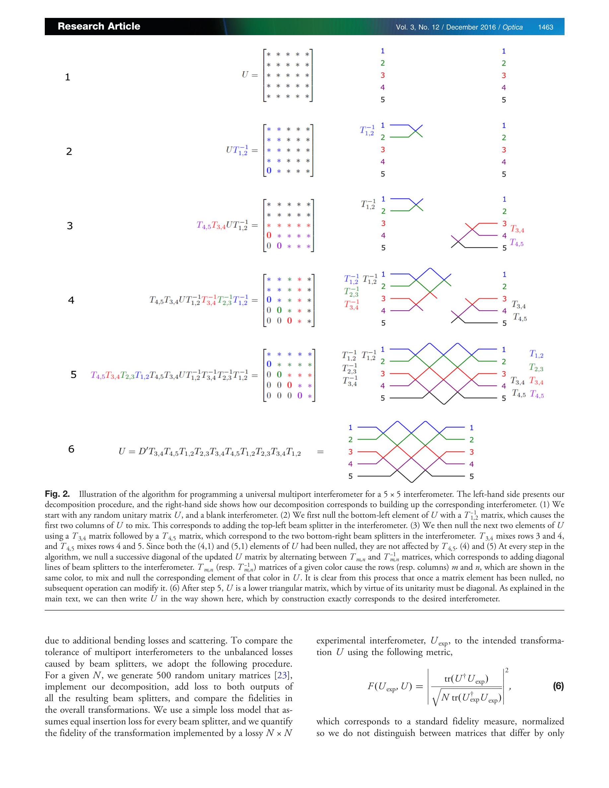

Essence

Fig. 1.
Universal multiport interferometer의 새로운 설계를 제안하여 기존 Reck 설계 대비 광학 깊이를 절반으로 줄이고 손실 견고성을 크게 향상시켰다.
저자: William R. Clements, Peter C. Humphreys, Benjamin J. Metcalf, W. Steven Kolthammer, Ian A. Walsmley | 날짜: 2016-12-20 | DOI: 10.1364/OPTICA.3.001460
Fig. 1.
Universal multiport interferometer의 새로운 설계를 제안하여 기존 Reck 설계 대비 광학 깊이를 절반으로 줄이고 손실 견고성을 크게 향상시켰다.
Fig. 1.

Fig. 2.
총평: 이 논문은 universal multiport interferometer의 설계를 근본적으로 개선한 중요한 기여로, 광학 깊이 감소와 손실 견고성 향상이라는 실질적 이점을 수학적 엄밀성과 함께 제시한다. 양자 및 고전 광자 응용 분야에서 광범위한 영향을 미칠 수 있는 결과이다.